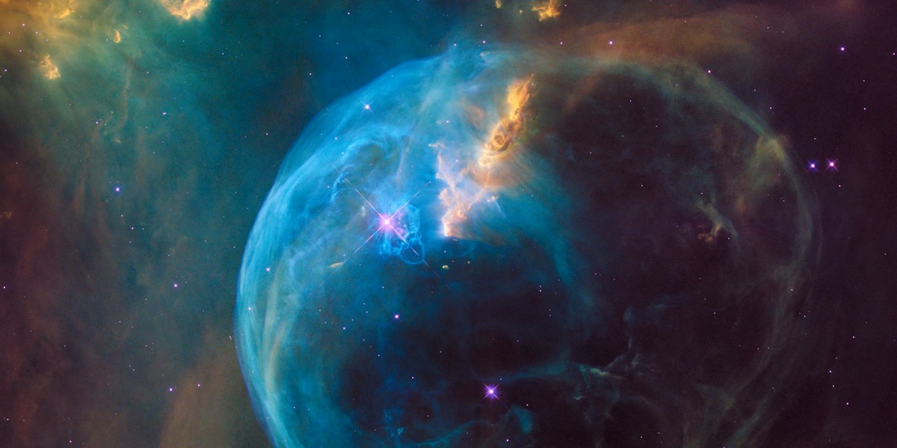

Precambrian Supereon
4.6 billion – 541 million years ago
Spanning over 4 billion years, the Precambrian represents the vast, foundational chapter of Earth's history. It begins with the formation of our planet from a hellish, molten state and encompasses the cooling of the crust, the formation of the first oceans, and the origin of life itself.
